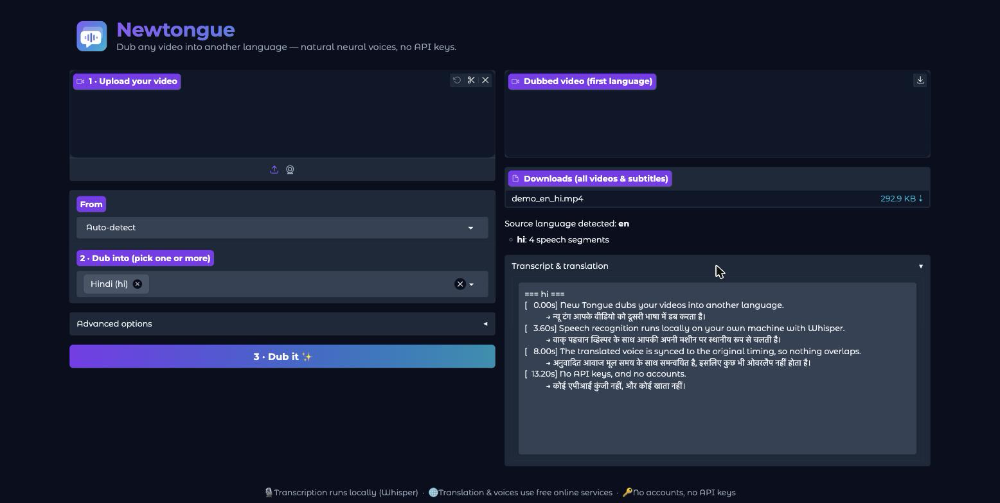
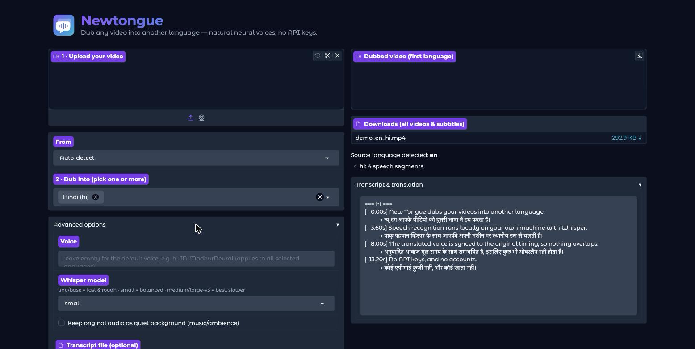

Newtongue transcribes your video, translates it, and rebuilds it with a natural neural voice in the language you pick — keeping every line in sync with the original timing. Runs on your own machine. No API keys, no accounts, no upload.
Turn the sound on. Every clip below came out of a single command — the English one is the source, the other two are what Newtongue produced from it.
The video stream is byte-identical in all three files. Newtongue copies it untouched and replaces only the audio, so dubbing costs you no quality.
# everything above, in one line
newtongue demo_en.mp4 --to hi,es --subtitles srt,vtt --subtitle-content bothSpeech-to-text runs locally with faster-whisper. Your video never leaves your machine — only the transcribed text is sent for translation.
Each dubbed line starts exactly where the original did. Long translations are sped up pitch-preserved, and clips are guaranteed never to overlap the next one.
Optionally keep the original audio underneath. It ducks automatically while the dub speaks and comes back up between sentences.
SRT, VTT, ASS or TXT — burned into the frame, embedded as a toggleable track, or as separate files. Bilingual mode shows translation and original together.
Generate subtitles, correct any mis-transcription by hand, then dub from your corrected file. Whisper isn't run twice.
Pick several targets at once. The source audio is transcribed once and reused for every language.
Transcription automatically uses an NVIDIA GPU when one is present, and falls back to CPU with int8 quantization otherwise.
Adjust speed, pitch and volume independently of the automatic sync speed-up, and pick any voice for a locale.
Double-click launchers for Windows, macOS and Linux fetch Python, dependencies and even ffmpeg on first run.


Download the release zip and double-click, or install it as a Python package if you'd rather script it.
| Windows | Unpack the zip and double-click Start Newtongue.bat |
|---|---|
| macOS | Right-click Start Newtongue.command → Open (first time only) |
| Linux | Run ./start-newtongue.sh |
# or from source
git clone https://github.com/devganeshg/newtongue.git
cd newtongue && uv sync
# dub into Hindi, with subtitles
uv run newtongue input.mp4 --to hi --srt
# several languages at once, keeping the music underneath
uv run newtongue input.mp4 --to hi,es,ja --keep-bg
# translated subtitles only, no dubbing
uv run newtongue input.mp4 --to de --no-dub --subtitles srt,vtt
# or open the web UI
uv run python app.pyTranslation and voices use free public endpoints that Google and Microsoft operate for their own products, not documented APIs for third parties. They can rate-limit or change without notice, and using them may not be consistent with those providers' terms of service. For commercial or production work, use an official API. Newtongue also produces a derivative work — only dub videos you have the rights to. Details in the README and third-party notices.